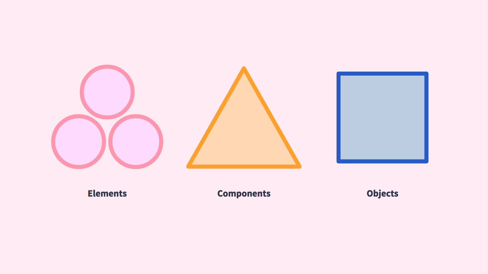
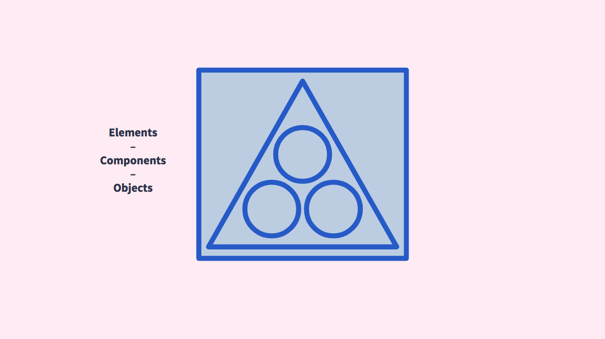
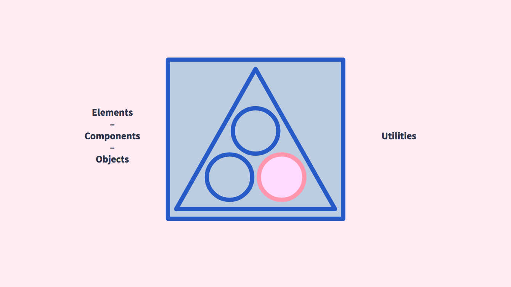

About
At NYC Opportunity, we believe government services should be:
- Created with the people who use and deliver them
- Equitably distributed
- Prototyped and tested for usability
- Rigorously tested and evaluated for effectiveness and impact
- Accessible to all
This is the foundation on which we build and deliver all of our digital products. The Patterns are built with these principles in mind to make ACCESS NYC accessible for design and development teams internally and externally for peers in the field.
Development
ACCESS NYC was relaunched in 2017 to address the barriers New Yorkers face when trying to seek information about or apply for benefits. This involved an iterative prototyping process that engaged residents, social workers, case managers, and government agency staff to deliver a new design and core user experience. The user interface started with the U.S. Web Design System as a boilerplate for UI Elements and WCAG AA compliance. It was extended for New York City residents by including support for seven different languages with RTL and LTR reading orientations.
Learn more about the initial launch of ACCESS NYC through these two case studies:
In late summer of 2017, NYC Opportunity and the Mayor’s Public Engagement Unit (PEU) began designing, developing, and testing a version of the ACCESS NYC Eligibility benefits screener optimized for their Outreach Specialists. This process involved taking the core user interface elements of ACCESS NYC and repurposing them for the outreach specialist with a nuanced and advanced understanding of enrolling New Yorkers in benefits.
Learn more about the NYC Opportunity and Public Engagement Unit partnership in this article.
During the development of the PEU Screener, the Product and Design teams were tasked with replatforming the ACCESS NYC interface, but there was no common language or easily accessible documentation for the designers and developers to reference. This realization highlighted the need to formalize the ACCESS NYC interface and Service Design Studio principles into a Design System.
Design Systems
“A design system is a set of interconnected patterns and shared practices coherently organized to achieve the purpose of digital products.” - Alla Kholmatova, Design Systems; A practical guide to creating design languages for digital products
To further the purpose of ACCESS NYC as a digital product, we realized the need to create and document the Patterns used to create it. As our practice develops we will be able to utilize the Patterns conventions and documentation as a starting point for understanding.
Naming Convention
The first step we took to creating the Patterns was to perform an audit of the existing ACCESS NYC modules and grouped them according to a naming convention influenced by “BEMIT: Taking the BEM Naming Convention a Step Further.” Our four buckets included Elements, Components, Objects, and Utilities. If you are familiar with Brad Frost’s Atomic Design Methodology, this structure will sound very familiar. As a team we picked names that resonated with us for each of the Patterns and assigned them to each group. The hope is that developing a common language will enable us work together more effectively to focus on the users we are serve.
The first step we took to create the Patterns was performing an audit of the existing ACCESS NYC modules and grouping them according to a naming convention influenced by “BEMIT: Taking the BEM Naming Convention a Step Further.” Our four buckets included Elements, Components, Objects, and Utilities. This structure will sound very familiar to those familiar with Brad Frost’s Atomic Design Methodology.
As a team, we picked names that resonated with us for each of the Patterns and assigned them to each group. The hope was to develop a common language that would enable us to work together more effectively to focus on the users we serve.

Elements
Element Patterns are the most primitive building blocks of a web page. They include some of the most standard HTML tags such as links, buttons, lists, and tables. They do not have complicated markup or any dependencies on other modules.
Components
Component Patterns are more complicated modules that may contain one or more Elements, complex markup, styling, or JavaScript dependencies. They are often repeated within a view.
Objects
Object Patterns contain the most complicated markup-specific styling. They may contain one or more Elements or Components. Objects generally do not repeat within a view but they may be globally visible across different views.

Utilities
Utilities are single-purpose classes that allow teams to change specific styling features of Elements, Components, and Objects. For the ACCESS NYC Patterns we are leveraging Tailwind CSS. By using utilities, the design system becomes far more flexible.

Views
Views are the pages that the ACCESS NYC Patterns live on. They are specific to every project that the Patterns are integrated into. For example, ACCESS NYC has 9 views, including:
- Homepage
- Eligibility Screener
- Eligibility Screener Results Page
- Program Landing
- Single Program
- Locations Landing
- Single Locations
- Search Page
- Single Pages
It is sometimes necessary to reference views for context in defining patterns. For instance, the Map Layout Utility was specifically created to address needs defined by the Locations Landing page on ACCESS NYC.
The ACCESS NYC Patterns are built using the NYCO Patterns Framework; a front-end stack, CLI, and cross-utility library for design systems. For more details about using the framework to develop with the ACCESS NYC Patterns visit the GitHub repository.